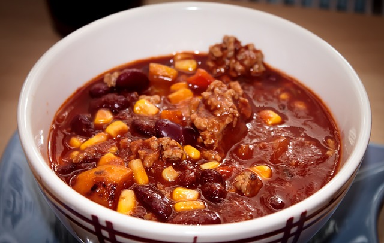

Mexikói csilisbab
Miért ez a kedvencem?
A mexikói csilisbab a kedvenc ételem, mert minden falatja tele van ízekkel és fűszerekkel. A darált hús és a bab kombinációja laktató, míg a fűszerek, mint a kömény és a chili, izgalmas pikantériát adnak neki.
Na de mi is ez valójában?
A mexikói csilisbab, vagyis chili con carne egy ízletes és laktató étel, amely darált marhahúsból, babból és paradicsomból készül. A tradicionális receptje számos fűszert tartalmaz, mint például a köményt, a feketeborsot és a chilipaprikát, amelyek gazdag, fűszeres ízt kölcsönöznek neki.

Készítsük el!
Hozzávalók
- 60dkg darált pulykahús
- 2 konzerv vörösbab
- 1 konzerv csemegekukorica
- 1 nagy konzerv paradicsompüré
- 4 gerezd fokhagyma
- 2 fej vöröshagyma
- 2 csili
- oregánó
- pirospaprika
-
- só
Hogyan?
- A hagymát és a fokhagymát tisztítsd meg, karikázd fel a hagymát, és zúzd össze a fokhagymát.
- Egy mélyebb serpenyőben vagy lábosban hevíts kevés olajat, majd pirítsd meg benne a hagymákat, amíg üvegesedni nem kezdenek. Ezután add hozzá a darált húst, és kevergesd, amíg a hús fehéredik.
- Add hozzá a karikákra vágott chilit. Sózd, borsozd, és szórd meg őrölt pirospaprikával és oregánóval. Tedd hozzá a paradicsompürét.
- Önts hozzá egy-másfél deci vizet, és főzd körülbelül 15 percig.
- Rakd a húshoz a megmosott, lecsepegtetett vörösbabot és a kukoricát, majd forrald össze, amíg minden puha lesz (kb. 15 perc).
- Ügyelj arra, hogy a lé ne legyen túl híg. Mielőtt leveszed a chilis babot a tűzről, kóstold meg, és ízesítsd, ha szükséges. Reszelt sajttal, forrón tálald.